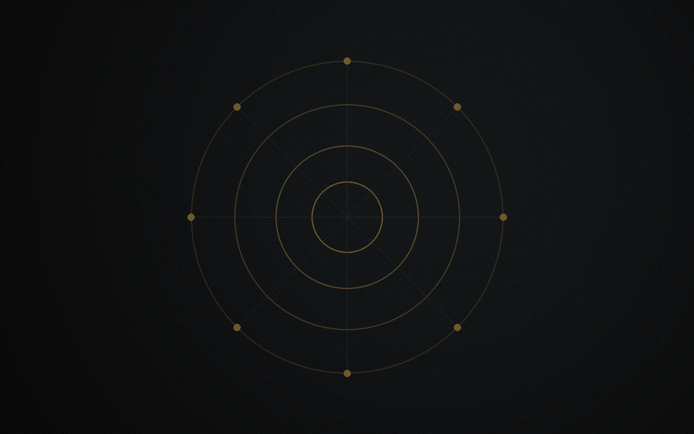

Identifier
Repérer les axes cohérents avec la vision et la trajectoire de Betsaleel.
Betsaleel Groupe · Betsaleel Holding
Betsaleel Holding est une structure mère de pilotage stratégique en construction, dédiée à la structuration progressive de projets spécialisés, utiles et durables.
Ce que Betsaleel construit
Betsaleel Holding est la structure mère. Betsaleel Groupe désigne la marque institutionnelle globale qui porte la vision, la cohérence et la trajectoire progressive de l'architecture Betsaleel.
Betsaleel construit progressivement une architecture entrepreneuriale spécialisée, fondée sur la gouvernance, l'innovation utile, l'économie bleue, la médiation et les passerelles Afrique-Europe.
Betsaleel articule pilotage, structuration, développement et investissement progressif autour d'initiatives cohérentes avec ses domaines de compétence.
Betsaleel privilégie une méthode simple : structurer avant d'annoncer, spécialiser avant d'élargir, prouver avant de déployer.
Une méthode courte pour maintenir la cohérence entre ambition institutionnelle, gouvernance et maturité réelle des projets.
Repérer les axes cohérents avec la vision et la trajectoire de Betsaleel.
Évaluer la maturité, le périmètre et la crédibilité de chaque projet.
Hiérarchiser les priorités pour éviter la dispersion institutionnelle.
Donner un cadre clair aux projets retenus avant toute exposition élargie.
Accompagner les initiatives cohérentes selon leur faisabilité et leur capacité d'action.
Renforcer progressivement le portefeuille selon la maturité réelle.

Écosystème
BlueWave Solutions est présenté comme premier axe opérationnel prioritaire. AquaLab Equipment, Concordia Consulting et Innovapatents restent des projets à structurer ou tester selon leur maturité réelle.
Des repères sobres pour relier gouvernance, innovation utile, impact responsable et coopération qualifiée.
La holding hiérarchise les priorités et garde une ligne cohérente entre vision et réalité opérationnelle.
L'impact recherché reste progressif et ne s'appuie pas sur des indicateurs non mesurés.
Les prises de contact doivent rester alignées avec les domaines, la maturité et la trajectoire de Betsaleel.